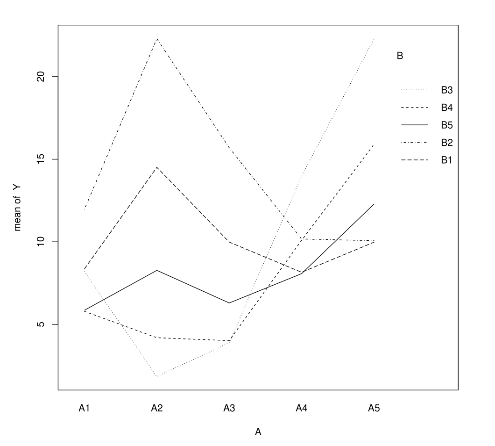

\(\newcommand{\VS}{\quad \mathrm{VS} \quad}\) \(\newcommand{\and}{\quad \mathrm{and} \quad}\) \(\newcommand{\E}{\mathbb E}\) \(\newcommand{\P}{\mathbb P}\) \(\newcommand{\Var}{\mathbb V}\) \(\newcommand{\Cov}{\mathrm{Cov}}\) \(\newcommand{\1}{\mathbf 1}\)
Previously, we considered that:
We still assume \(Y\) is quantitative, but explanatory variables can be qualitative and/or quantitative.
We’ll see that these situations reduce to the case of the previous chapter.
We seek to explain \(Y\) using a single qualitative variable \(A\).
We observe \((Y, X)\), and define
\[N_i = \sum_{k=1}^n \mathbf 1\{X_k=i\} \and \overline Y_i = \frac{1}{N_i}\sum_{k=1}^n Y_k \mathbf 1\{X_k=i\}\]
Total mean:
\(Y_i = \frac{1}{N}\sum_{k=1}^n Y_k = \frac{1}{N}\sum_{i=1}^I\sum N_i \overline Y_i\)
For \(k = 1, \ldots, n\)
\[Y_k = \sum_{i=1}^I \mu_i \mathbf{1}\{X_k=A_i\} + \varepsilon_k\]
where \(\E[\varepsilon_k]=0\), \(\Cov(\varepsilon_k,\varepsilon_l)=\sigma^2\1\{k=l\}\)
We use one-hot encoding: \(X_{ki}=\1\{X_k=A_i\}\)
That is, for individual \(k\), \(X_{k\cdot} = (\1\{X_k=A_1\}, \dots, \1\{X_k=A_I\}) \in \{0,1\}^I\)
Or, using previous notations, \(X = (X^{(1)}, \dots, X^{(I)})\) where
\[X^{(i)}= \begin{pmatrix} X^{(i)}_1 \\ \vdots \\ X^{(i)}_n \end{pmatrix}\]
If there are \(3\) categories e.g. blue, orange, green, we replace the column \(X\) by \(3\) columns
Example with \(I=3\) categories and \(n=5\) individuals \[ \begin{pmatrix} \color{blue}{\mathrm{blue}} \\ \mathrm{green} \\ \color{blue}{\mathrm{blue}} \\ \mathrm{orange} \\ \mathrm{orange} \\ \end{pmatrix} \quad \text{becomes} \quad X=\begin{pmatrix} \color{blue}{\mathrm{1}} & \mathrm{0} & \mathrm{0}\\ \mathrm{0} & \mathrm{0} & \mathrm{1}\\ \color{blue}{\mathrm{1}} & \mathrm{0} & \mathrm{0}\\ \mathrm{0} & \mathrm{1} & \mathrm{0}\\ \mathrm{0} & \mathrm{1} & \mathrm{0}\\ \end{pmatrix} \]
We rewrite the model \(Y_k = \sum_{i=1}^I \mu_i \mathbf{1}\{X_k=A_i\} + \varepsilon_k\) as
\[Y = X\mu + \varepsilon\]
If we want to model the constant (intercept) and \(I-1\) modalities, we assume
\[Y_k = \mu_1+\sum_{i=2}^I (\mu_i-\mu_1) \mathbf{1}\{X_k=A_i\} + \varepsilon_k\]
Why \(\mu_i - \mu_1\) and not just \(\mu_i\)?
Interpretation: gives expectation \(\E[Y_k] = \mu_1\) and coefficients \(\alpha_i= \mu_i - \mu_1\)
Interpretation: gives coefficients \(\alpha_i= \mu_i\)
Whichever the model we choose (with constant or not), estimation of \(\mu_i=\E[Y_k|X_k=A_i]\) is the same. Same for \(\Var(\varepsilon_k)=\sigma^2\).
Proposition
In category \(i\), OLS estimation of \(\mu_i\) leads to:
An unbiased estimator of \(\sigma^2\) is
Proof (OLS): derive \(\sum_{k=1}^n (Y_k - \mu'_i)^2\) with respect to \(\mu'_i\)
We want to test \(H_0: \mu_1 = \cdots = \mu_I\).
This is a linear constraints test! (See previous chapters)
Proposition
If \(\varepsilon \sim N(0, \sigma^2 I_n)\), then under \(H_0: \mu_1 = \cdots = \mu_I\):
\[F = \frac{SSB/(I-1)}{SSW/(n-I)} \sim F(I-1, n-I)\]
Critical region at level \(\alpha\): \(RC_\alpha = \{F > f_{I-1,n-I}(1-\alpha)\}\)
In \(\mu_1= \ldots = \mu_I\), there are \(I-1\) constraints to test.
\[F = \frac{n-I}{I-1} \cdot \frac{SSR_c - SSR}{SSR}\]
We show that
In R: anova(lm(Y~A))
Warning
The previous analysis of variance test tests equality of means between modalities not equality of variances
It is valid under the assumption \(\varepsilon \sim N(0, \sigma^2 I_n)\).
How to test equality of variances in each modality:
In R: leveneTest or bartlett.test from car library
If factor \(A\) is significant, we want to know more:
which modality(ies) differs from others?
We want to perform all tests:
\[H_{0}^{i,j}: \mu_i = \mu_j \quad \text{vs} \quad H_{1}^{i,j}: \mu_i \neq \mu_j\]
for all \(i \neq j\) in \(\{1, \ldots, I\}\), corresponding to \(I(I-1)/2\) tests.
Perform all Student’s t-tests for mean comparison (1 constraint), each at level \(\alpha\).
Problem: Given the number of tests, this would lead to many false positives.
False positives are a well-known problem in multiple testing.
Solution: Apply a correction to the decision rule, e.g.
For one-way ANOVA: Tukey’s test addresses the problem.
\[Q = \max_{(i,j)} \frac{|\overline{Y}_i - \overline{Y}_j|}{\hat{\sigma}\sqrt{\frac{1}{N_i} + \frac{1}{N_j}}}\]
Distribution of Tukey’s Test Statistic
Under \(H_0: \mu_1 = \cdots = \mu_I\) and assuming \(\varepsilon \sim N(0, \sigma^2 I_n)\):
\[Q \sim Q_{I,n-I}\]
where \(Q_{I,n-I}\) denotes the Tukey distribution with \((I, n-I)\) degrees of freedom.
Note: This is exact if all \(n_i\) are equal, otherwise the distribution is approximately Tukey.
To test each \(H_0^{i,j}: \mu_i = \mu_j\), we use the critical regions:
\[RC_\alpha^{i,j} = \left\{|\overline{Y}_i - \overline{Y}_j| > \frac{\hat{\sigma}}{\sqrt{2}} \sqrt{\frac{1}{n_i} + \frac{1}{n_j}} \cdot Q_{I,n-I}(1-\alpha)\right\}\]
where \(Q_{I,n-I}(1-\alpha)\) denotes the \((1-\alpha)\) quantile of a tukey distribution \(Q(I,n-I)\) of degrees \((I, n-I)\).
The form of the previous \(RC_\alpha^{i,j}\) ensures that: \[\mathbb{P}_{\mu_1 = \cdots = \mu_I}\left(\bigcup_{(i,j)} H_1^{i,j}\right) = \alpha\]
Interpretation: If all null hypotheses \(H_0^{i,j}\) are true (\(\mu_1 = \cdots = \mu_I\)), then the probability of concluding at least one \(H_1^{i,j}\) equals \(\alpha\).
This is the simultaneous Type I error rate equals \(\alpha\).
With Tukey’s test, two significantly different means are truly different, not just due to false positives.
In R: TukeyHSD
Homoscedasticity Test:
We get
Levene’s Test for Homogeneity of Variance (center = median)
Df F value Pr(>F)
group 3 0.6527 0.584
68We get
Response: Loss
Df Sum Sq Mean Sq F value Pr(>F)
Exercise 3 712.56 237.519 20.657 1.269e-09 ***
Residuals 68 781.89 11.498The means are significantly different. We read in particular:
We finish by analyzing the mean differences more precisely:
Exercise
diff lwr upr p adj
2-1 7.1666667 4.1897551 10.1435782 0.0000001
3-1 3.8888889 0.9119773 6.8658005 0.0053823
4-1 -0.6111111 -3.5880227 2.3658005 0.9487355
3-2 -3.2777778 -6.2546894 -0.3008662 0.0252761
4-2 -7.7777778 -10.7546894 -4.8008662 0.0000000
4-3 -4.5000000 -7.4769116 -1.5230884 0.0009537Conclusion: All differences are significant, except between exercise 4 and exercise 1.
We observe \(Y\) and explanatory variables \(X^{(1)}, X^{(2)}\)
\[\begin{aligned} Y_k &= m + \alpha_i\sum_{i=1}^I\1\{X^{(1)}_k \in A_i\} +\beta_i\sum_{j=1}^J\1\{X^{(2)}_k \in B_j\} \\ &+ \gamma_{ij}\sum_{i=1}^I\sum_{j=1}^J\1\{X^{(1)}_k \in A_i\}\1\{X^{(2)}_k \in B_i\} + \varepsilon_k \end{aligned}\]
In other words, in modality \(A_i\) and \(B_j\),
\(Y_k =m+\alpha_i + \beta_j + \gamma_{ij}+ \varepsilon_k\)
This is a model of the type \(Y_k = \mu_{ij} + \varepsilon_k\).
In modalities \((i,j)\), \(\E[Y_k] = \mu_{ij} = m + \alpha_i + \beta_j + \gamma_{ij}\)
\(Y\): employee satisfaction
\(A\): schedule type (flexible or fixed)
\(B\): training level (basic or advanced)
We can imagine:
\(Y\): plant yield
\(A\): fertilizer type (1 or 2)
\(B\): water quantity (low, medium, high)
We can imagine:
Maybe interaction is so strong that the effect due to A seems absent!
In modalities \((i,j)\), \(\E[Y_k] = \mu_{ij} = m + \alpha_i + \beta_j + \gamma_{ij}\)
Initial two-factor ANOVA problem: \(I \times J\) parameters \(\mu_{ij}\).
Now: \(1 + I + J + IJ\) parameters (\(m\), \(\alpha_i\), \(\beta_j\), \(\gamma_{ij}\)).
Therefore, we need \(1 + I + J\) constraints for identifiability:
\(\sum_{i=1}^{I} \alpha_i = 0 \and \sum_{j=1}^{J} \beta_j = 0\)
\(\sum_{i=1}^{I} \gamma_{ij} = 0 \and \sum_{j=1}^{J} \gamma_{ij} = 0\)
These constraints ensure model identifiability by removing the redundant parameters that cause multicollinearity issues.
The complete model (with interaction) is launched with the command:
With these constraints, the parameter interpretation is as follows:
Intercept: \(m = \mu_{11}\)
Main effect A: \(\alpha_i = \mu_{i1} - \mu_{11}\)
Main effect B: \(\beta_j = \mu_{1j} - \mu_{11}\)
Interaction: \(\gamma_{ij} = \mu_{ij} - \mu_{i1} - \mu_{1j} + \mu_{11}\)
Intercept: \(m = \mu_{11}\)
Main effect A: \(\alpha_i = \mu_{i1} - \mu_{11}\)
Main effect B: \(\beta_j = \mu_{1j} - \mu_{11}\)
Interaction: \(\gamma_{ij} = \mu_{ij} - \mu_{i1} - \mu_{1j} + \mu_{11}\)
The choice of constraints does not affect the estimation of the expectation of \(Y\) in each crossed modality \(A_i \cap B_j\).
Proposition
Whatever the linear constraints chosen, the OLS leads to, for all \(i = 1, \ldots, I\), \(j = 1, \ldots, J\) and \(k = 1, \ldots, N_{ij}\), if \(X^{(1)}_{k}=A_i\) and \(X_k^{(2)}=B_j\):
\[\widehat{Y}_{k} = \overline{Y}_{ij}:= \frac{1}{N_{ij}} \sum_{k=1}^{n} Y_{k}\1\{X_k^{(1)}=A_i \and X_k^{(2)}=B_j\}\]
and to the estimation of the residual variance:
\[\hat{\sigma}^2 = \frac{1}{n - IJ} \sum_{i=1}^I\sum_{j=1}^J\sum_{k=1}^n (Y_{k} - \overline{Y}_{ij})^2\1\{X_k^{(1)}=A_i \and X_k^{(2)}=B_j\}\]
First, in the additive model with interaction, \(Y_{ijk} = m + \alpha_i + \beta_j + \varepsilon_{ijk}\)
Do we have \(\gamma_{ij} = 0\) for all \(i, j\)?
Plot \(\overline Y_{ij}\) in function of modalities \((i,j)\)
Lines cross in presence of interaction
We want to test for the presence of an interaction:
\[H_0^{(AB)}: \gamma_{ij} = 0 \text{ for all } i, j\]
If we conclude \(H_0^{(AB)}\) (accept the null hypothesis), we then want to test the marginal effects:
\[H_0^{(A)}: \alpha_i = 0 \text{ for all } i \and H_0^{(B)}: \beta_j = 0 \text{ for all } j\]
\[H_0^{(AB)}: \gamma_{ij} = 0 \text{ for all } i, j\]
Warning
If we reject \(H_0^{(AB)}\), it makes no sense to test whether A or B have an effect: they have one through their interaction.
These tests reduce to constraint tests in the regression model.
We assume that “the design is balanced”: this means that \(N_{ij}:=N\) does not depend on \(i\) or \(j\). (Otherwise, everything becomes complicated).
In this case, we have the analysis of variance formula:
\[S_T^2 = S_A^2 + S_B^2 + S_{AB}^2 + S_R^2\]
\(S_T^2 = \sum_{k=1}^{n} (Y_{k} - \overline{Y})^2\): total sum of squares
\(S_A^2 = \sum_{i=1}^{I} \sum_{j=1}^{J} N_{ij} (\overline{Y}_{i.} - \overline{Y})^2\): \(S^2_{between}\) in the case of one-factor ANOVA where the factor is \(A\)
\(S_B^2 = \sum_{i=1}^{I} \sum_{j=1}^{J} N_{ij} (\overline{Y}_{.j} - \overline{Y})^2\): \(S^2_{between}\) in the case of one-factor ANOVA where the factor is \(B\)
\(S_{AB}^2 = \sum_{i=1}^{I} \sum_{j=1}^{J} N_{ij} (\overline{Y}_{ij} - \overline{Y}_{i.} - \overline{Y}_{.j} + \overline{Y})^2\) quantifies the interaction
\(S_R^2 = \sum_{i=1}^{I} \sum_{j=1}^{J} \sum_{k=1}^{N_{ij}} (Y_{k} - \overline{Y}_{ij})^2\1\{X^{(1)}_k=A_i \and X^{(2)}_k=B_j\}\): \(S_{within}\) in one-factor ANOVA
For testing the interaction, \(H_0^{(AB)}: \gamma_{ij} = 0\) for all \(i, j\)
We the linear constraint test statistic \(F = \frac{n-p}{q} \frac{(SSR_c - SSR)}{SSR}\)
where \(SSR_c\) corresponds to the sum of squares of the residuals in the space \(\gamma_{ij}=0\) for all \((i,j)\).
\[F^{(AB)} = \frac{S_{AB}^2/(I-1)(J-1)}{S_R^2/(n-IJ)}\]
When \(\varepsilon \sim \mathcal N(0, \sigma^2 I_n)\), \(F^{(AB)} \sim \mathcal F((I-1)(J-1), n-IJ)\)
For testing the main effect of \(A\), \(H_0^{(A)}: \alpha_i = 0\) for all \(i\):
We use \(F = \frac{n-p}{q} \frac{(SSR_c - SSR)}{SSR}\)
where \(SSR_c\) corresponds to the sum of squares of the residuals in the space \(\alpha_i=0\) for all \(i\).
\[F^{(A)} = \frac{S_A^2/(I-1)}{S_R^2/(n-IJ)}\]
When \(\varepsilon \sim \mathcal{N}(0, \sigma^2 I_n)\), \(F^{(A)} \sim \mathcal{F}(I-1, n-IJ)\)
For testing the main effect of \(B\), \(H_0^{(B)}: \beta_j = 0\) for all \(j\):
We use \(F = \frac{n-p}{q} \frac{(SSR_c - SSR)}{SSR}\)
where \(SSR_c\) corresponds to the sum of squares of the residuals in the space \(\beta_j=0\) for all \(j\).
\[F^{(B)} = \frac{S_B^2/(J-1)}{S_R^2/(n-IJ)}\]
When \(\varepsilon \sim \mathcal{N}(0, \sigma^2 I_n)\), \(F^{(B)} \sim \mathcal{F}(J-1, n-IJ)\)
In software, these tests are summarized in a table as shown below.
In R: anova(lm(Y ~ A*B))
| Source | df | Sum Sq | Mean Sq | F value | Pr(>F) |
|---|---|---|---|---|---|
| \(A\) | \(I-1\) | \(S_A^2\) | \(S_A^2/(I-1)\) | \(F^{(A)}\) | … |
| \(B\) | \(J-1\) | \(S_B^2\) | \(S_B^2/(J-1)\) | \(F^{(B)}\) | … |
| \(A:B\) | \((I-1)(J-1)\) | \(S_{AB}^2\) | \(S_{AB}^2/((I-1)(J-1))\) | \(F^{(AB)}\) | … |
| Residuals | \(n-IJ\) | \(S_R^2\) | \(S_R^2/(n-IJ)\) |
Fisher tests are based on the assumption \(\varepsilon \sim N(0, \sigma^2 I_n)\)
Test equality of variances
Form the ANOVA table (independent of chosen constraints)
If the \(AB\) interaction is significant: don’t change anything
If the interaction is not significant: analyze the marginal effects of A and B
lm(Y ~ A + B)Once effects are identified: perform post-hoc analysis by examining differences between (crossed) modalities more closely, using Tukey’s test as in one-factor ANOVA